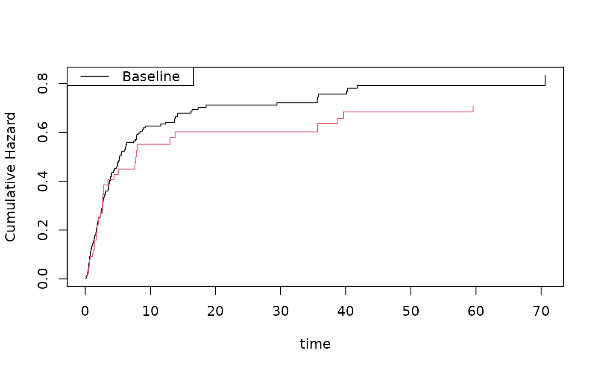
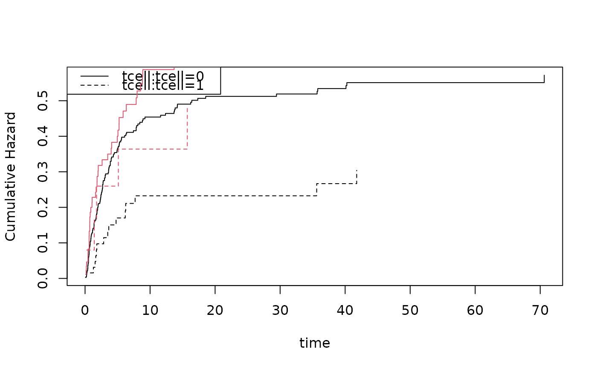
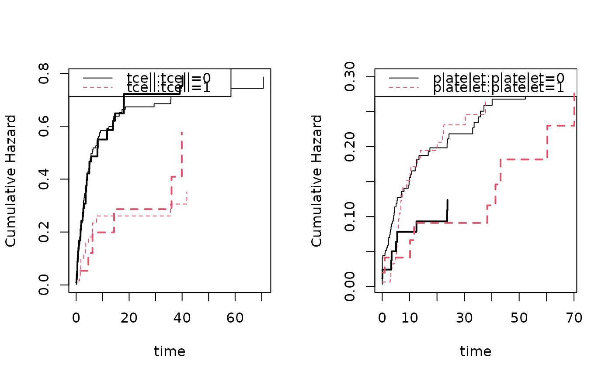

Simulation of Output from Cumulative Incidence Regression Model
Source:R/sim-pc-hazard.R
sim_cif.RdSimulates data that looks like fit from a fitted cumulative incidence model (Fine-Gray or logistic).
Usage
sim_cif(
cif,
n,
data = NULL,
Z = NULL,
rr = NULL,
strata = NULL,
drawZ = TRUE,
cens = NULL,
rrc = NULL,
entry = NULL,
Sentry = NULL,
cumstart = c(0, 0),
U = NULL,
pU = NULL,
type = NULL,
extend = NULL,
...
)Arguments
- cif
Output from
prop.odds.subdistorccr(cmprsk), or callinvsubdistwith cumulative and linear predictor.- n
Number of simulations.
- data
Data frame to extract covariates.
- Z
Design matrix instead of data.
- rr
Relative risks.
- strata
Strata vector.
- drawZ
Logical; randomly sample from Z.
- cens
Censoring specification.
- rrc
Relative risks for censoring.
- entry
Delayed entry time.
- Sentry
Survival related to delayed entry.
- cumstart
Start cumulatives at time 0.
- U
Uniforms for drawing timing.
- pU
Uniforms for drawing event type.
- type
Model type:
"logistic","cloglog", or"rr".- extend
Extend piecewise constant with constant rate.
- ...
Arguments for
sim_subdist.
Examples
data(bmt)
nsim <- 100
## logit cumulative incidence regression model
cif <- cifreg(Event(time,cause)~platelet+age,data=bmt,cause=1)
estimate(cif)
#> Estimate Std.Err 2.5% 97.5% P-value
#> platelet -0.5300 0.23329 -0.9872 -0.07274 0.0231012
#> age 0.3553 0.09611 0.1669 0.54363 0.0002187
plot(cif,col=1)
simbmt <- sim_cif(cif,nsim,data=bmt)
dtable(simbmt,~cause)
#>
#> cause
#> 0 1
#> 61 39
#>
scif <- cifreg(Event(time,cause)~platelet+age,data=simbmt,cause=1)
estimate(scif)
#> Estimate Std.Err 2.5% 97.5% P-value
#> platelet -0.3317 0.4475 -1.20884 0.5454 0.45855
#> age 0.4225 0.2433 -0.05446 0.8994 0.08253
plot(scif,add=TRUE,col=2)

## Fine-Gray cloglog cumulative incidence regression model
cif <- cifregFG(Event(time,cause)~strata(tcell)+age,data=bmt,cause=1)
estimate(cif)
#> Warning: IC does not have mean zero (max |mean|/rms = 6.1e-05). Using lava.options(check.ic = FALSE) disables the warning globally.
#> Estimate Std.Err 2.5% 97.5% P-value
#> age 0.3584 0.07883 0.2039 0.5129 5.471e-06
plot(cif,col=1)
simbmt <- sim_cif(cif,nsim,data=bmt)
scif <- cifregFG(Event(time,cause)~strata(tcell)+age,data=simbmt,cause=1)
estimate(scif)
#> Estimate Std.Err 2.5% 97.5% P-value
#> age 0.1246 0.1446 -0.1588 0.4081 0.3887
plot(scif,add=TRUE,col=2)

################################################################
# simulating several causes with specific cumulatives
################################################################
cif1 <- cifreg(Event(time,cause)~strata(tcell)+age,data=bmt,cause=1)
cif2 <- cifreg(Event(time,cause)~strata(platelet)+tcell+age,data=bmt,cause=2)
cifss <- list(cif1,cif2)
simbmt <- sim_cifs(list(cif1,cif2),nsim,data=bmt,extend=0.005)
scif1 <- cifreg(Event(time,cause)~strata(tcell)+age,data=simbmt,cause=1)
scif2 <- cifreg(Event(time,cause)~strata(platelet)+tcell+age,data=simbmt,cause=2)
cbind(cif1$coef,scif1$coef)
#> [,1] [,2]
#> age 0.4157207 0.5536631
## can be off due to restriction F1+F2<= 1
cbind(cif2$coef,scif2$coef)
#> [,1] [,2]
#> tcell 0.68378716 1.2132311
#> age -0.03484858 -0.4479749
par(mfrow=c(1,2))
## Cause 1 follows the model
plot(cif1); plot(scif1,add=TRUE,col=1:2,lwd=2)
# Cause 2:second cause is modified with restriction to satisfy F1+F2<= 1, so scaled down
plot(cif2); plot(scif2,add=TRUE,col=1:2,lwd=2)
